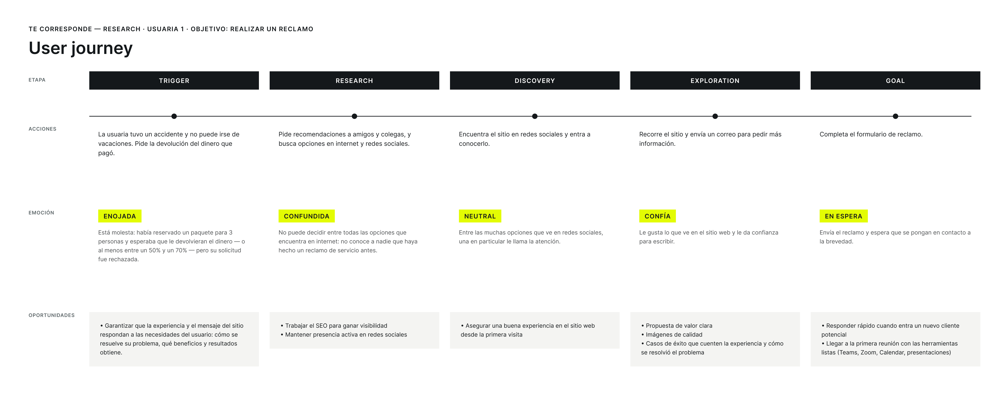
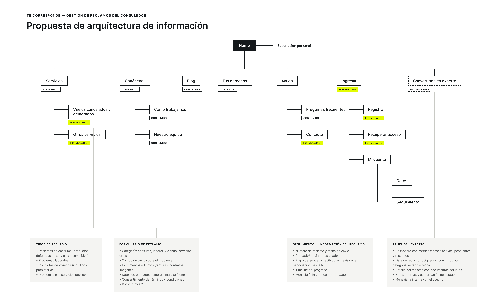
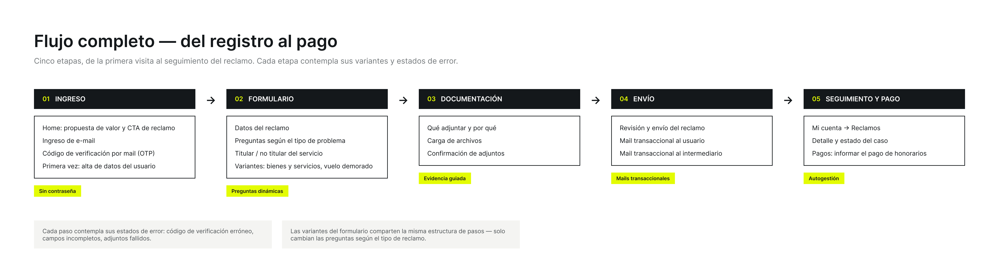
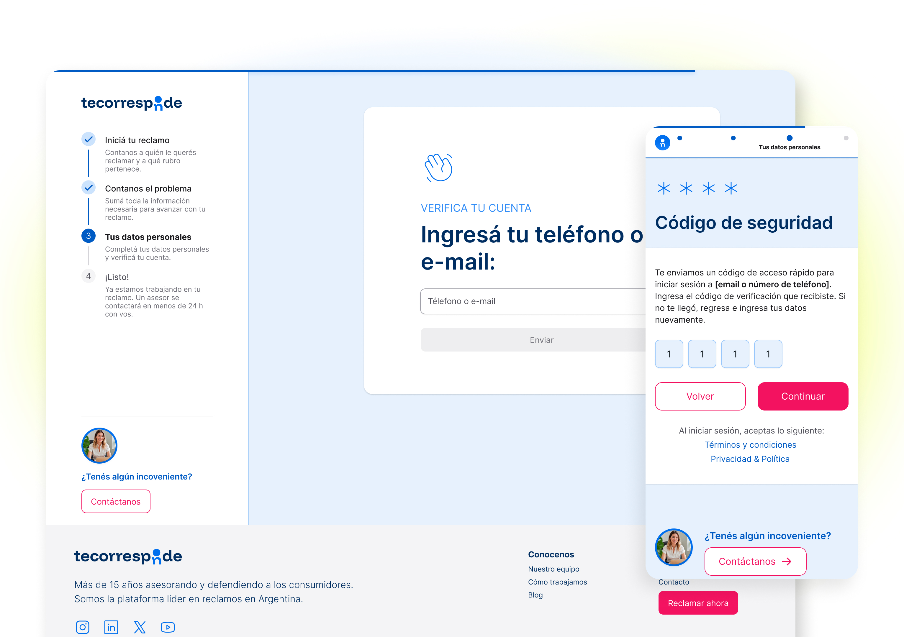
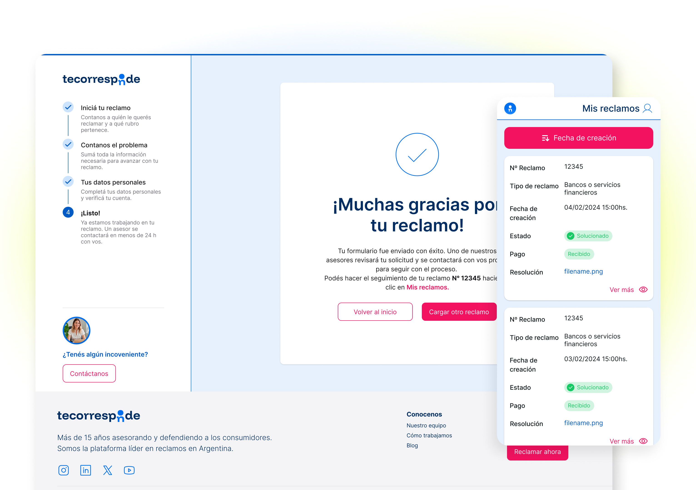
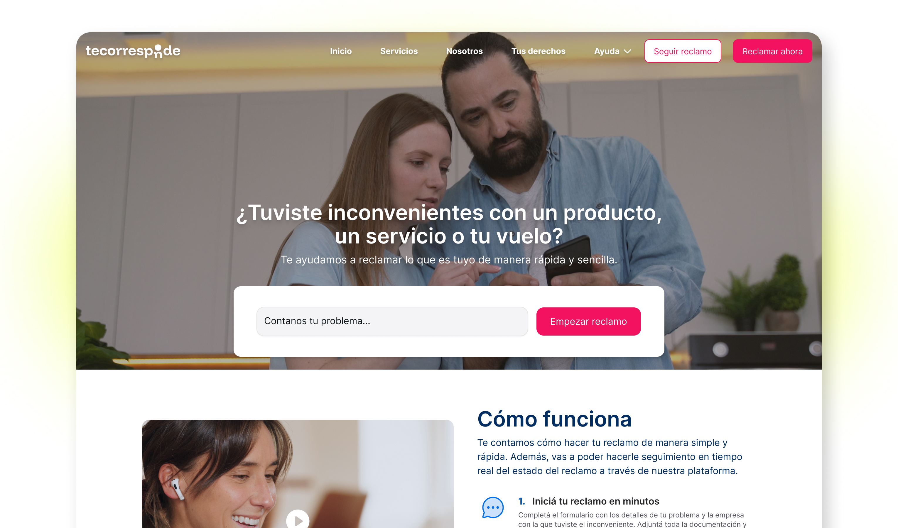
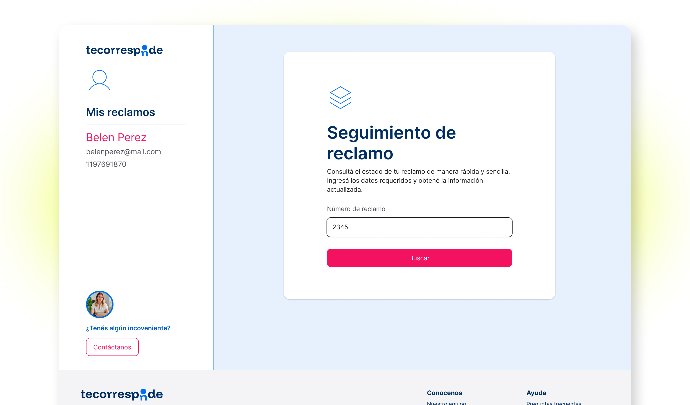
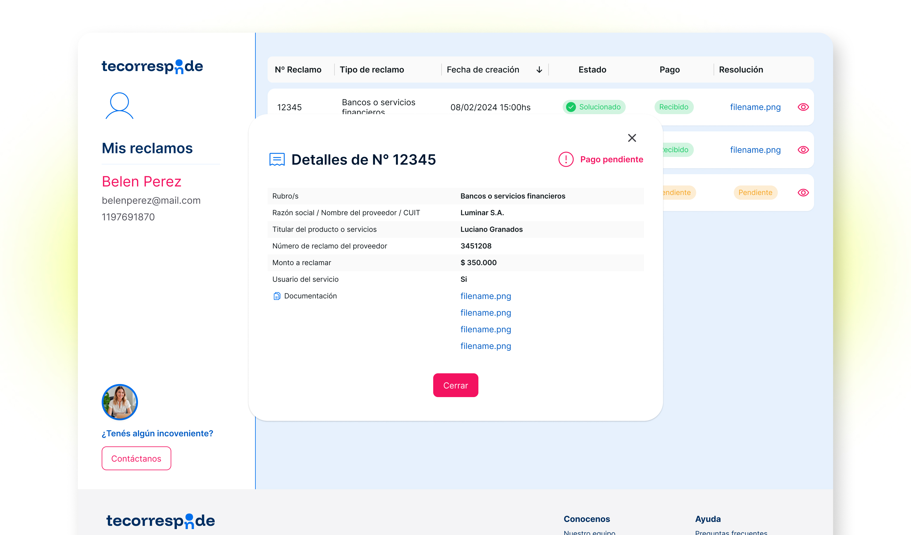
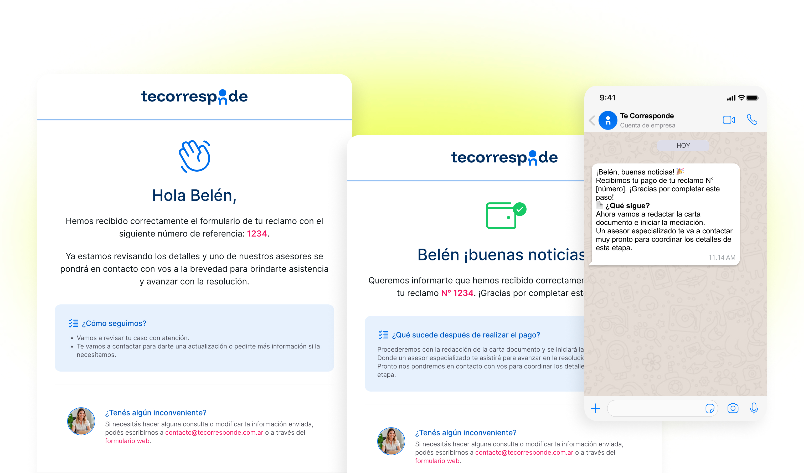

Te corresponde: de vacío regulatorio a producto en producción
Cómo diseñé end-to-end una plataforma que reemplaza el trámite presencial de reclamos de consumo por un proceso 100% online, en una ventana de oportunidad regulatoria en Argentina.
Rol
Product Designer (ownership end-to-end)
Alcance
Branding, research, UX/UI, mailings, back office
Cliente
Qubik
Sitio
tecorresponde.com.ar
Resumen
Con la desregulación de la defensa del consumidor en el horizonte y sin un producto equivalente en el mercado argentino, Qubik vio la oportunidad de construir una plataforma que resolviera de punta a punta la gestión de reclamos de consumo. Diseñé de 0→1 Te corresponde, desde el branding hasta el producto final (research, arquitectura de información, UI y mailings), colaborando con desarrollo y el equipo legal para llevarlo a producción y, una vez lanzado, seguir iterando el flujo en base a uso real.
Problem statement
Business pain. Con el retiro anunciado del Estado de su rol en defensa del consumidor, se abría un vacío de mercado en Argentina: no existía un producto que resolviera la gestión de reclamos de consumo de forma privada y ágil. Qubik identificó la oportunidad de ser first-mover.
User pain. Quien tenía un reclamo de consumo no contaba con un camino claro para resolverlo: debía buscar un abogado por su cuenta, averiguar el proceso por distintos canales y gestionar todo de forma fragmentada.
Las personas con un reclamo de consumo en Argentina no tenían un camino claro para resolverlo, justo cuando el Estado se retiraba de su rol en defensa del consumidor.
"Te corresponde" resuelve esto centralizando todo el proceso (carga del reclamo, contacto directo con el abogado, seguimiento) en una sola plataforma online.
Research & Discovery
Al no existir competencia directa en Argentina, el research arrancó con un benchmark de tres tipos de referencia distintos: especialistas de nicho (AirHelp, refundmore, SkyRefund), plataformas de reclamos genéricos (ReclamoSeguro, tuQuejaSuma) y el canal oficial (Argentina.gob.ar).
Benchmark competitivo: ocho referencias evaluadas en tres categorías distintas.
Insights clave
Flujo simple gana conversión. Los productos con mejor experiencia (AirHelp) reducen el proceso a un único foco: el formulario de reclamo, sin distracciones. Se descartó la complejidad de plataformas más genéricas a favor de un flujo lineal.
El target buscaba confianza legal, no "app ágil". A diferencia de la estética consumer-friendly de AirHelp o ReclamoSeguro, se optó por un look corporativo tradicional, alineado a un público de 25 a 50 años con nivel educativo terciario/universitario.
Transparencia como diferencial. Ningún competidor directo ofrecía seguimiento en tiempo real + comunicación directa con quien gestiona el caso.
User journey: validación del problema
Se mapeó el recorrido de una usuaria con un reclamo real (reembolso de un paquete de vacaciones rechazado) para entender el arco emocional completo, no solo el flujo funcional.
Trigger
Enojada
Su solicitud de reembolso fue rechazada.
Research
Confundida
No conoce a nadie que haya reclamado antes; no sabe a quién recurrir.
Discovery
Neutral
Encuentra el sitio en redes sociales.
Exploration
Confía
La propuesta de valor le da confianza para escribir.
Goal
En espera
Completa el formulario y espera respuesta.

User journey completo: trigger, research, discovery, exploration y goal.
De research a decisión de producto
El tramo de mayor fricción emocional (Research → "confundida") valida el problem statement: no había un camino claro. La necesidad de un sistema de comunicación sólido, identificada en este journey, se tradujo directamente en el chat integrado dentro de "Mis reclamos" (ver sección Solución).
Definición: How Might We
¿Cómo podríamos simplificar la carga del reclamo sin perder la seriedad legal del servicio?
¿Cómo podríamos darle al usuario visibilidad total del estado de su reclamo, sin que tenga que preguntar o esperar una respuesta del abogado?
Objetivo de negocio
Objetivo
Métrica
Baseline
Meta
Validar el modelo de reclamos gestionados
Reclamos / mes
0 (0→1)
100 / mes
Arquitectura de la información
El flujo principal: Home con dos CTAs (Reclamar / Seguir reclamo) → formulario dinámico según categoría → verificación de identidad por OTP → confirmación y derivación al abogado → seguimiento en "Mis reclamos" con chat integrado.

Propuesta de arquitectura de información, primera versión evaluada.
Por qué OTP y no login tradicional
El patrón de uso esperado es de baja frecuencia: un usuario gestiona uno o dos reclamos, no docenas como en un e-commerce. Pedirle que cree y recuerde una contraseña para un uso tan esporádico generaba fricción innecesaria frente al costo/beneficio de un código de verificación.
Alternativas descartadas
Se evaluó una arquitectura más amplia, tipo sitio institucional (blog, "tus derechos", dashboard de gestión avanzado con filtros y mensajería interna). Se simplificó a un flujo lineal centrado en conversión (reclamo primero, contenido de soporte después), siguiendo el patrón validado en el benchmark. Decisión de diseño propia, priorizando velocidad de lanzamiento.
Proceso de diseño: ideación y wireframes
Se mapearon múltiples escenarios de flujo (registro, formulario, envío, pago) contemplando estados de error, validaciones y variantes mobile/desktop, no solo el happy path.

El flujo completo, sintetizado en cinco etapas, cada una con sus variantes y estados de error contemplados.
Iteración clave: momento de autenticación
En las primeras versiones se evaluaron distintos puntos del flujo para pedir la verificación OTP. Se decidió moverla al final, después de que el usuario completa el formulario de reclamo, para evitar fricción y abandono en el primer contacto con el producto, capturando primero el compromiso del usuario antes de pedirle el paso de autenticación.


Colaboración con desarrollo
La elección de OTP sobre login tradicional fue una decisión conjunta con el equipo técnico, validada también desde UX por el patrón de uso esperado. El back office, en cambio, no pudo pasar por un proceso de diseño UX completo por restricciones de roadmap: se adaptó una base ya existente de otro producto de Qubik, con participación de diseño para ajustes puntuales.
Solución final
Formulario de reclamo dinámico por categoría, con verificación de identidad al cierre del flujo.
"Mis reclamos": seguimiento del estado de cada caso.
Chat integrado con el abogado asignado, activo cuando necesita información adicional.
Sistema de comunicaciones transaccionales multicanal (email + WhatsApp, diseñado en espejo), cubriendo todo el ciclo de vida del reclamo.




Sistema de comunicaciones transaccionales: email y WhatsApp en espejo.
Esta solución responde directamente al problem statement: centraliza en un solo lugar online lo que antes requería buscar un abogado por cuenta propia y gestionar el proceso de forma fragmentada. El sistema de comunicaciones multicanal, sumado a "Mis reclamos" y el chat, materializa de punta a punta el valor de marca de transparencia definido desde el research inicial.
Resultados e impacto
El producto generó tracción desde el lanzamiento, con reclamos ingresando de forma sostenida y acercándose a la meta de 100/mes, sin llegar a alcanzarla en el período en que participé del proyecto. Se identificó un patrón relevante: una porción de los reclamos se rebotaba por no cumplir los requisitos que el equipo legal necesitaba para tomar el caso. El volumen también estuvo condicionado por un nivel de inversión en adquisición menor al proyectado.
Nota de transparencia
No se compartieron métricas exactas post-lanzamiento; el proyecto quedó en medición al momento del cierre de mi participación.
Aprendizajes y next steps
Qué haría diferente
01
Categorización del formulario
Las distintas categorías de reclamo estaban unificadas en un mismo formulario. Abrirlo en preguntas específicas por categoría (capturando desde el inicio los requisitos que el equipo legal necesita para calificar un caso) habría reducido la tasa de reclamos rebotados.
02
Documentación adjunta en el flujo
Había propuesto que el usuario suba documentación como parte de los steps del formulario. Se descartó por tiempos de roadmap, una decisión de negocio que primó sobre una recomendación de diseño.
Mi rol en la toma de decisiones
Diseñé la identidad de marca desde cero (logo, paleta, estética de comunicación), todas las pantallas del producto de punta a punta y los mailings transaccionales. Participé también en el diseño del back office, adaptando una base ya existente por restricciones de roadmap. Una vez el producto en producción, pasé a un rol de mejora continua: identifiqué e indiqué cambios de flujo para optimizar la experiencia del abogado y del usuario, en base al uso real.